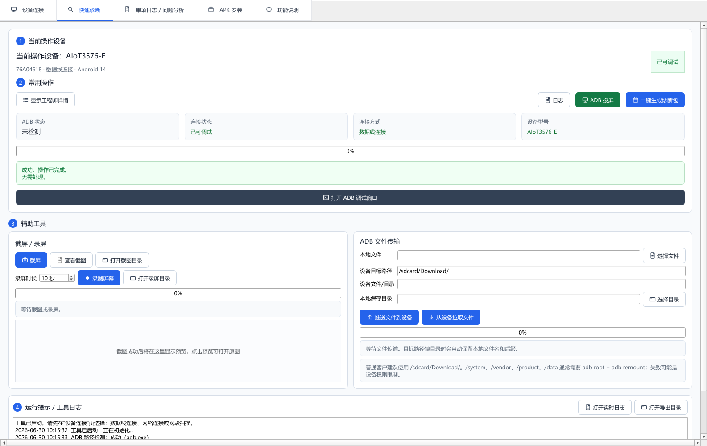

Android 通用 ADB 诊断助手 v1.1.2
一款面向普通客户和 FAE 工程师的 Windows 桌面 ADB 诊断工具。客户不需要理解命令行，连接 Android 设备后即可生成诊断包，也可进行同一网络扫描、日志抓取、投屏、截图、文件传输和 APK 安装。
- 检测 ADB、USB 设备、同一网络 ADB、授权状态和基础设备信息。
- 一键抓取 Android 日志、系统状态、网络、Crash/ANR 线索并生成 zip 诊断包。
- 支持默认 5566 端口、IP 区间扫描、无线调试配对和多设备 APK 安装。
